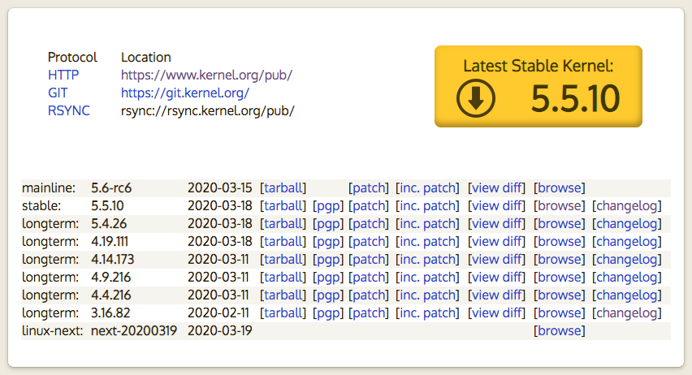

前段时间在排查一个TCP丢包没有重传的问题，最后定位到是由于线上机器内核存在问题导致的。排查期间发现对于Linux内核版本、CentOS版本等各种版本有点傻傻分不清楚，因此今天整理一下。
Linux 内核介绍
Linux 内核介绍直接参考 WIKI
Linux 内核版本命名规范经历过三次调整。3.0 以前的版本号规范历史可以参考 Linux Kernel Version Numbering 这篇。从3.0之后，版本号的格式都是 x.y.z，并没有遵循 Semantic Versioning ，查阅了一些资料感觉并没有什么固定的版本号规范，不过这也不重要就是了，只需要从Linux官网 https://kernel.org/ 查询最新的版本即可，在官网中：

- mainline 表示主线版本
- stable 表示稳定版，由mainline在实际成熟时发布
- longterm （Long Term Support, LTS）长期支持版，当不再支持时会标记EOL（End Of Life）
需要注意的是从 2.6 之后，好像就不再有偶数表示稳定版，奇数表示测试版的说法了。
那最重要的呢就是我们需要知道我们当前环境使用的内核版本，可以直接通过以下方式查看。
查看完整的内核版本信息
➜ uname -a
Linux matrix-cloud-storage-pro-97338-8gu60 3.10.0-957.21.3.el7.x86_64 #1 SMP Tue Jun 18 16:35:19 UTC 2019 x86_64 x86_64 x86_64 GNU/Linux
➜ cat /proc/version
Linux version 3.10.0-957.21.3.el7.x86_64 (mockbuild@kbuilder.bsys.centos.org) (gcc version 4.8.5 20150623 (Red Hat 4.8.5-36) (GCC) ) #1 SMP Tue Jun 18 16:35:19 UTC 2019
只查看内核版本号
➜ uname -r
3.10.0-957.21.3.el7.x86_64
内核版本号尾部有时会携带一些描述，具体含义如下：
rc（或r），表示发行候选版本（release candidate），rc后的数字表示该正式版本的第几个候选版本，多数情况下，各候选版本之间数字越大越接近正式版。
smp，表示对称多处理器（Symmetric MultiProcessing）。
pp，在Red Hat Linux中常用来表示测试版本（pre-patch）。
EL，在Red Hat Linux中用来表示企业版Linux（Enterprise Linux）。
mm，表示专门用来测试新的技术或新功能的版本。
fc，在Red Hat Linux中表示Fedora Core。
Linux 查看内核Changelog
定位问题的时候，有时候需要查看当前的内核是否有打了某个补丁，可以通过内核的Changelog查看。查看方式如下：
1. 先查看内核版本
➜ uname -r
3.10.0-957.21.3.el7.x86_64
2. 获取内核完整rpm包名
➜ rpm -qa | grep 3.10.0-957.21.3.el7.x86_64
kernel-tools-libs-3.10.0-957.21.3.el7.x86_64
kernel-headers-3.10.0-957.21.3.el7.x86_64
kernel-3.10.0-957.21.3.el7.x86_64
python-perf-3.10.0-957.21.3.el7.x86_64
kernel-tools-3.10.0-957.21.3.el7.x86_64
kernel-devel-3.10.0-957.21.3.el7.x86_64
3. 获取内核changelog
➜ rpm -q --changelog kernel-3.10.0-957.21.3.el7.x86_64 | less
或者直接通过以下命令查看
➜ rpm -q --changelog kernel
Linux 发行版
搞清楚了Linux内核后，我们再来了解下什么是Linux发行版，具体还是参考WIKI。简单讲Linux发行版就是Linux内核以及一系列的应用和软件合起来的软件包。例如CentOS、RHEL(Red Hat Enterprise Linux)、Debian、Ubuntu这些都是Linux发行版。每个发行版都有自己的版本号约定，例如RHEL有RHEL6.1/RHEL6.2/RHEL7.0/RHEL8.0等等。而CentOS则是RHEL依照开源协议规定发布的源码所编译而成的，只是Red Hat不对其提供商业支持而已。
由于RHEL最重要的是保证稳定性。因此，对于每个RHEL主版本，其使用的内核版本在第一次发布之后即会固定，对于一些安全补丁和驱动升级，则会以补丁的方式打回到该内核版本上。以下是RHEL的内核版本表：
- RHEL 2.1 (released in 2002) used kernel version 2.4.9.
- RHEL 3 (released in 2003, based on RHL 9) used kernel version 2.4.21.
- RHEL 4 (released in 2005, based on Fedora Core 3) used kernel version 2.6.9.
- RHEL 5 (released in 2007, based on Fedora Core 6) used kernel version 2.6.18.
- RHEL 6 (released in 2010, based on a mix of Fedora 12 and 13) used kernel version 2.6.32.
- RHEL 7 (released in 2014, based on a mix of Fedora 19 and 20) uses kernel version 3.10.0.
- RHEL 8 (released in 2019, based on Fedora 28) uses kernel version 4.18.0.
这也是为什么目前Linux 内核稳定版已经升级到5.5.10，而我们目前常用的CentOS7使用的内核版本仍在3.10.0的原因。
本文地址